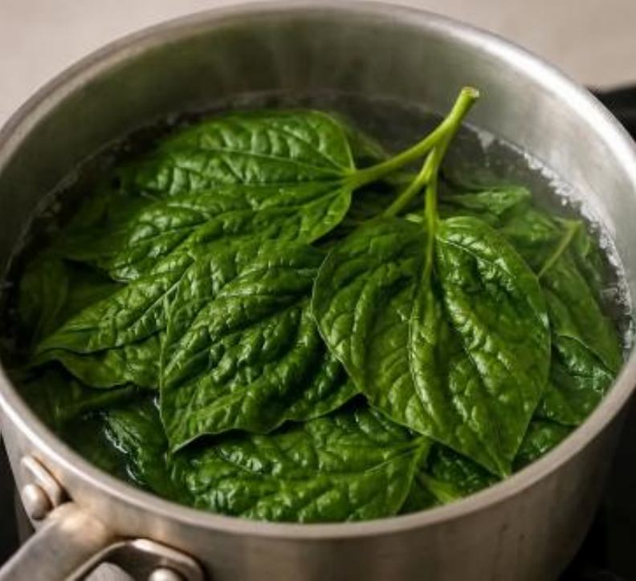
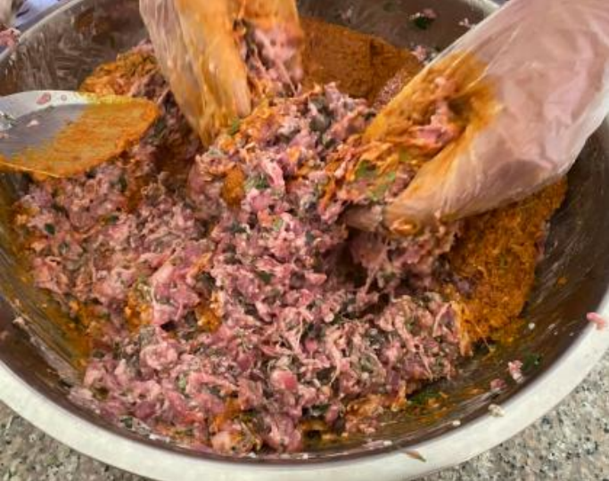
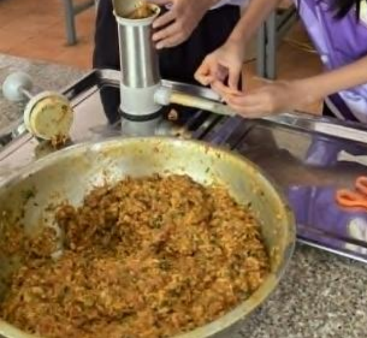
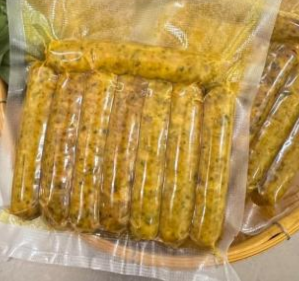

V · หลักฐานภาคสนาม
วิดีโอสัมภาษณ์เจ้าของโครงงาน
คณะผู้จัดทำเว็บไซต์ได้ลงพื้นที่สัมภาษณ์เจ้าของโครงงานที่วิทยาลัยเกษตรและเทคโนโลยีสุโขทัย เพื่อสอบถามที่มา แนวคิด และขั้นตอนการพัฒนาผลิตภัณฑ์ไส้อั่วแกงหอยขมใบชะพลู ตามที่ได้รับมอบหมาย
เบื้องหลัง: ขั้นตอนการทำผลิตภัณฑ์
ระหว่างการสัมภาษณ์ ทีมงานได้บันทึกภาพขั้นตอนการเตรียมวัตถุดิบและการขึ้นรูปผลิตภัณฑ์จากรายงานโครงงานไว้ด้วย ดังนี้

เตรียมใบชะพลู

คลุกเคล้าส่วนผสม

อัดไส้และมัดเป็นท่อน

ผลิตภัณฑ์สำเร็จ